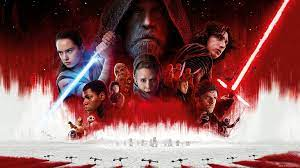
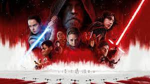
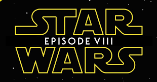

Luke Skywalker |Mark Hamill
Kylo Ren | Adam Driver
Rey | Daisy Ridley
Leia Organa | Carrie Fisher
Lider Supremo Snoke |Andy Serkis
Yoda |Frank Oz
Poe Dameron |Oscar Isaac
Vice Almirante Holdo |Laura Dern
Capitã Phasma | Gwendoline Christie
Rose Tico | Kelly Marie Tran
Finn | John Boyega
Chewbacca | Peter Mayhew, Joonas Suotamo
Slowen Lo | Joseph Gordon-Levitt
BB-8 | Dave Chapman, Brian Herring
General Hux | Domhnall Gleeson
Almirante Ackbar | Tom Kane, Timothy M. Rose
R2-D2 | Jimmy Vee
C-3PO | Anthony Daniels
Maz Kanata | Lupita Nyong'o
Tallie Lintra | Hermione Corfield
Master Codebreaker | Justin Theroux
Paige Tico | Ngô Thanh Vân
Captain Peavey | Adrian Edmondson
Tenente Connix | Billie Lourd
Nien Nunb | Mike Quinn
Stormtrooper Commander | David Santana
Dobbu Scay | Mark Hamill
First Order Snowtrooper | Ricky Gabbriellini
Commander D'Acy | Amanda Lawrence
Captain Canady | ark Lewis Jones

Kylo Ren | Adam Driver
Rey | Daisy Ridley
Leia Organa | Carrie Fisher
Lider Supremo Snoke |Andy Serkis
Yoda |Frank Oz
Poe Dameron |Oscar Isaac
Vice Almirante Holdo |Laura Dern
Capitã Phasma | Gwendoline Christie
Rose Tico | Kelly Marie Tran
Finn | John Boyega
Chewbacca | Peter Mayhew, Joonas Suotamo
Slowen Lo | Joseph Gordon-Levitt
BB-8 | Dave Chapman, Brian Herring
General Hux | Domhnall Gleeson
Almirante Ackbar | Tom Kane, Timothy M. Rose
R2-D2 | Jimmy Vee
C-3PO | Anthony Daniels
Maz Kanata | Lupita Nyong'o
Tallie Lintra | Hermione Corfield
Master Codebreaker | Justin Theroux
Paige Tico | Ngô Thanh Vân
Captain Peavey | Adrian Edmondson
Tenente Connix | Billie Lourd
Nien Nunb | Mike Quinn
Stormtrooper Commander | David Santana
Dobbu Scay | Mark Hamill
First Order Snowtrooper | Ricky Gabbriellini
Commander D'Acy | Amanda Lawrence
Captain Canady | ark Lewis Jones

A Resistência, liderada pela General Leia Organa, está lutando contra a Primeira Ordem, enquanto Rey, uma
jovem
lutadora com habilidades na Força, busca o treinamento do lendário Jedi, Luke Skywalker, em uma ilha isolada
no
planeta Ahch-To.
Enquanto Rey tenta convencer Luke a se juntar à luta contra a Primeira Ordem, Kylo Ren, o ex-aprendiz de
Luke,
agora líder da Primeira Ordem, busca sua própria jornada para encontrar seu lugar no conflito. Rey e Kylo
Ren
estabelecem uma conexão única através da Força, o que desencadeia uma série de eventos que afetam
profundamente
ambos os personagens.
Enquanto isso, a Resistência enfrenta dificuldades, já que a Primeira Ordem lança um ataque devastador
contra
eles, levando à perda de muitas vidas e à fuga desesperada da base principal da Resistência. A aliança
improvável entre a piloto Poe Dameron, a ex-stormtrooper Finn e a engenheira Rose Tico se torna crucial para
a
sobrevivência da Resistência.
No clímax do filme, Rey confronta Kylo Ren na tentativa de trazê-lo de volta para o lado da luz, enquanto a
Resistência luta para sobreviver contra a frota da Primeira Ordem. O filme termina com um confronto épico
entre
Luke Skywalker e Kylo Ren, onde Luke demonstra seu poder e sacrifício para salvar a Resistência e permitir
sua
fuga.
